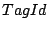
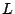
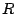
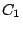
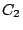
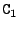
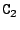
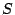
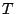
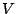

An unconditional equation is a special case of a conditional equation, i.e., an equality with one or more associated conditions (premises). The equality is sometimes called the conclusion of the conditional equation.
In Asf+Sdf a conditional equation can be written in three (syntactically different, but semantically equivalent) ways:
(a) []  =  when , , ...
(b) [] , , ... ===> =
(c) [] , , ...
=================
=
where , , ... are conditions which may be either matching (and have the form ` := '), negative matching (and have the form ` !:= '), positive (and have the form ` == '), or negative (and have the form ` != ').
The conditions of an equation are evaluated from left to right. Let, initially,  be the set of variables occurring in the left-hand side of the conclusion of the equation. For the evaluation of matching conditions we have the following case:
The evaluation of negative conditions is described by replacing in the above description `identical' and `match' by `not identical' and `do not match', respectively.
warning.gif Warning: It is not allowed to introduce new variables in a negative condition.
After the successful evaluation of the conditions, all variables occurring in the right-hand side of the conclusion of the equation should be in .
New variables (see above) should therefore not occur on both sides of a positive condition, in a negative condition, or in the right-hand side of the conclusion.